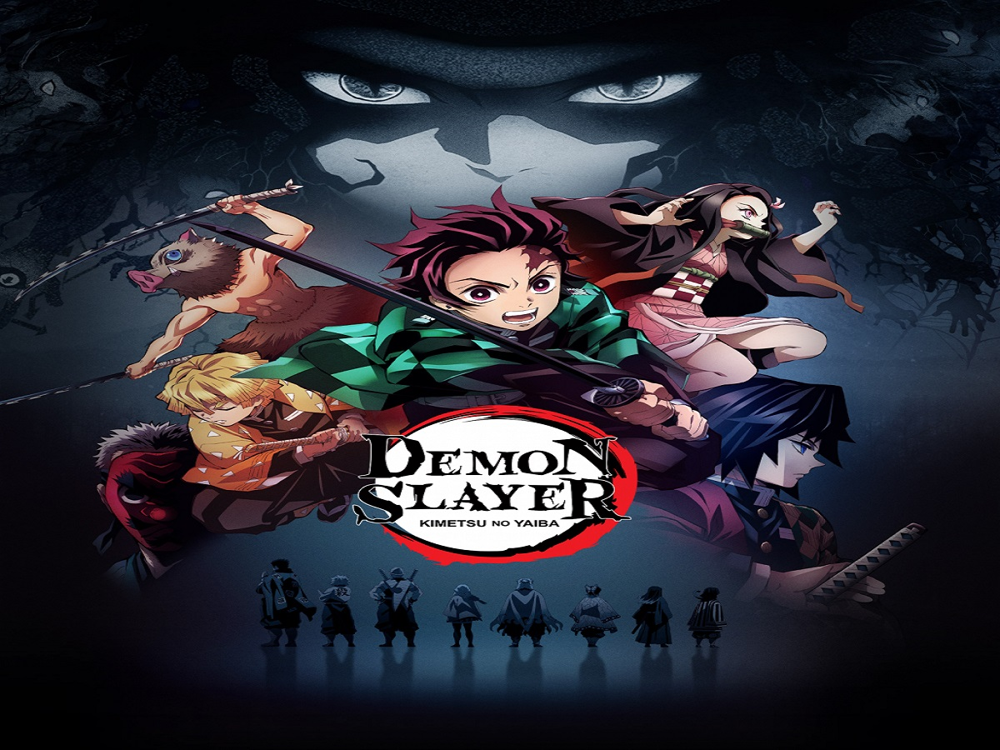
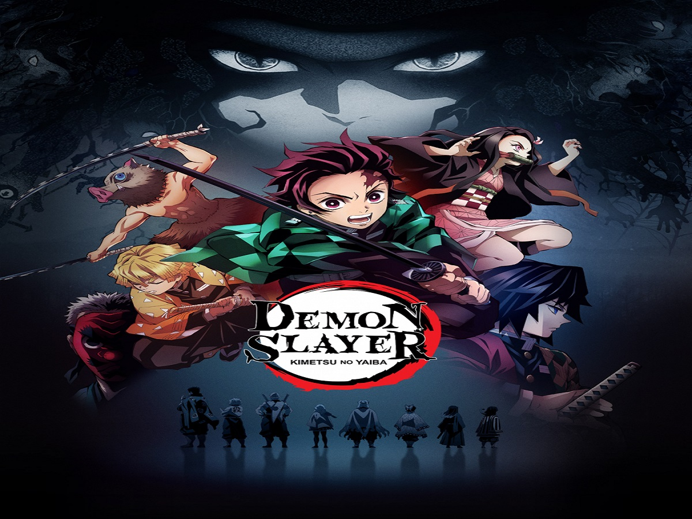

Thomas Stanley Holland nasceu em Kingston-upon-Thames, Surrey, filho de Nicola Elizabeth (Frost), um fotógrafo, e Dominic Holland que é comediante e autor.
Ele mora com seus pais e três irmãos mais novos - Paddy e os gêmeos Sam e Harry. Tom frequentou a Donhead Prep School. Então, depois de um exame de
onze plus bem-sucedido, ele se tornou aluno do Wimbledon College. Tendo concluído com sucesso seus GCSEs, em setembro de 2012,
Tom iniciou um curso de dois anos na BRIT School for Performing Arts & Technology, notável por seus numerosos ex-alunos famosos.

Nome: Thomas Stanley Holland
Idade: 25 anos (01/06/1996)
Altura: 1,68m
País: Reino Unido
Nomeações a prémios: 28 nomeações
Prémios: 21
Emmy: 0 nomeações
Projetos Futuros: Uncharted (2022)
Participações:
Spiderman (2021), The Devil All the Time (2020), Onward(2020), Spies in Disguise(2019), Avengers: Infinity War(2018), Spider-Man: Homecoming(2017),The Lost City of Z(2016), A Monster Calls(2016), Captain America: Civil War(2016), In the Heart of the Sea(2015), Locke(2014), Moments(2013), How I Live Now(2013), Lo imposible(2012), Kari-gurashi no Arietti (2011).


 
